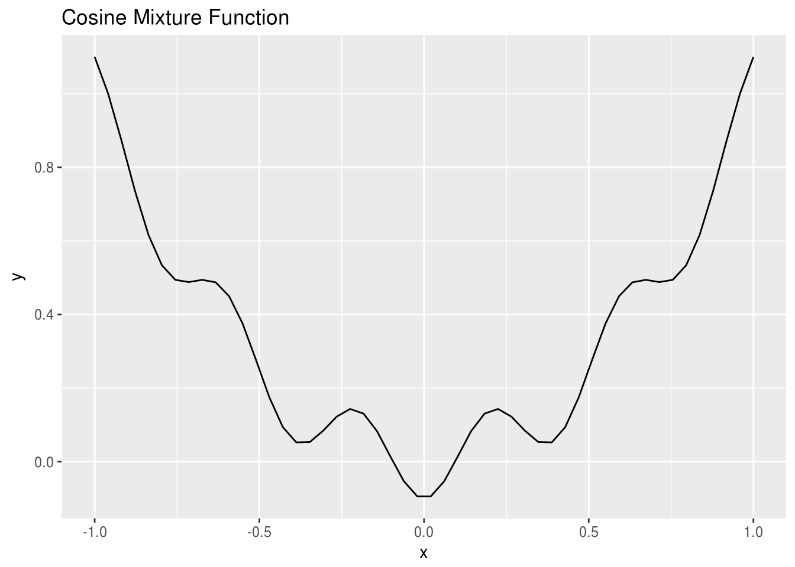
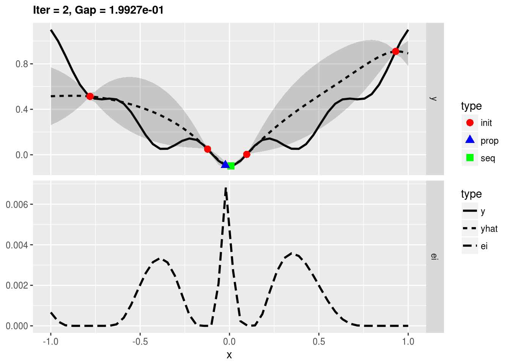
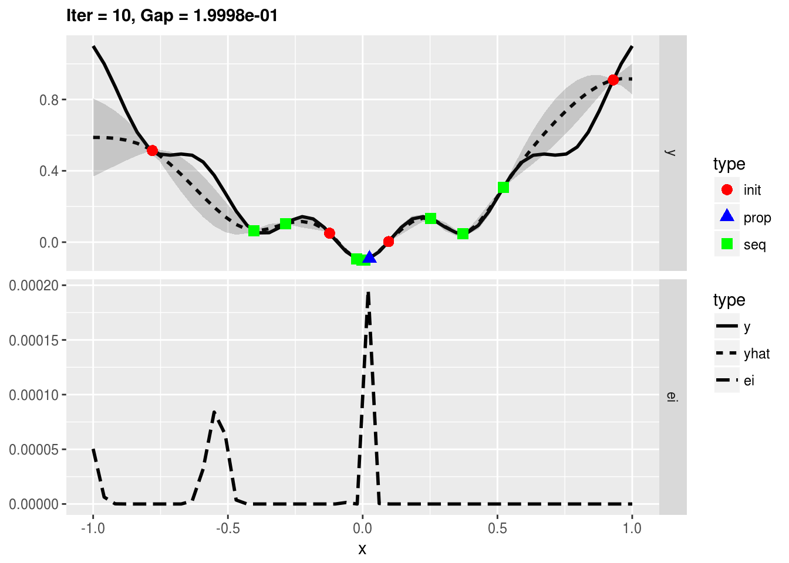
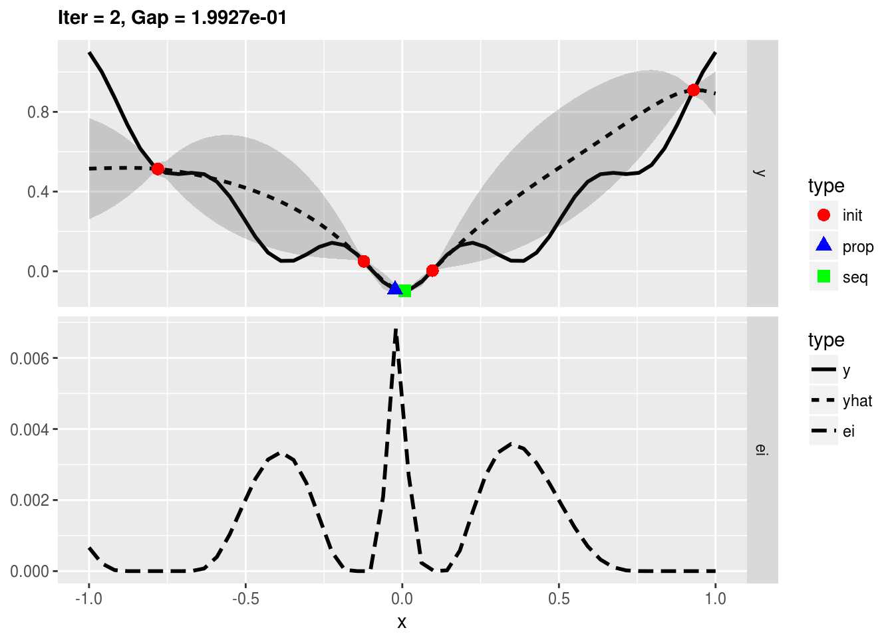
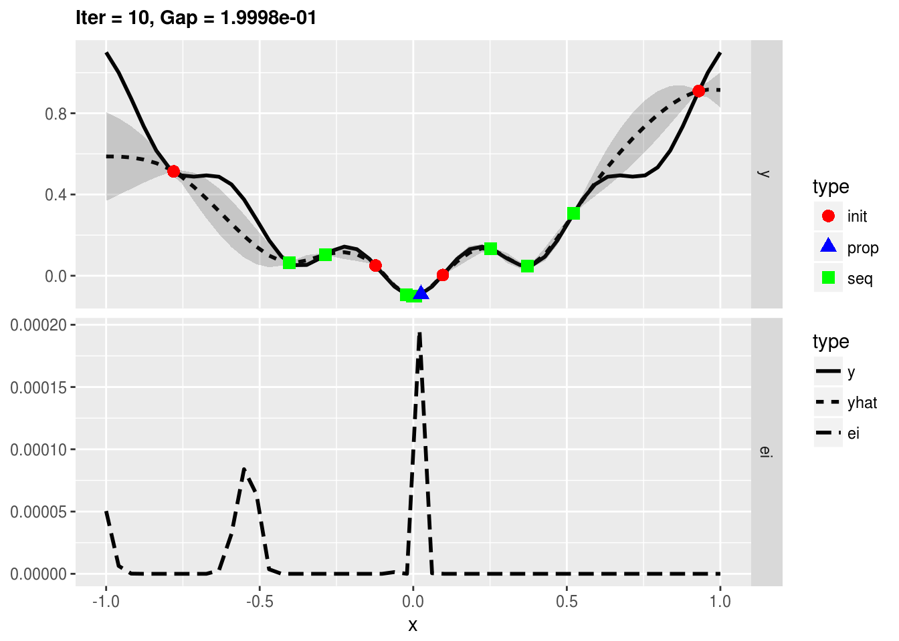
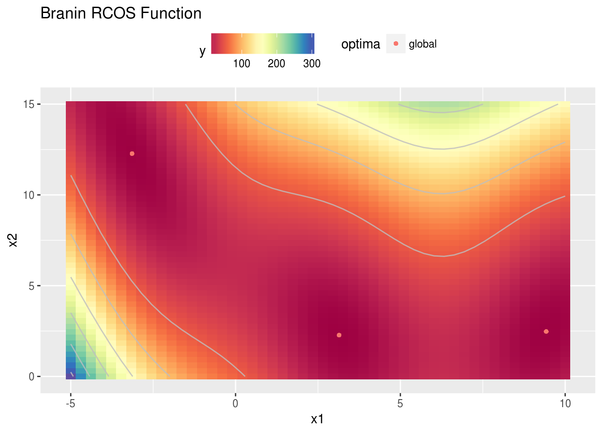

Quick introduction to mlrMBO
This guide gives an overview of the typical optimization workflow with mlrMBO for those familiar with model based optimization.
Prerequisites
We demonstrate the functionality of mlrMBO by optimizing different test functions. Instead of writing these function by hand, we make use of the smoof package which offers many single objective functions frequently used for benchmarking of optimizers. smoof is a dependency and get automatically attached with mlrMBO:
library(mlrMBO)Note that you are not limited to these test functions bat can define arbitrary black box functions using the constructor makeSingleObjectiveFunction().
Example run: 1d numeric
For our simplest example we choose a cosine mixture function:
obj.fun = makeCosineMixtureFunction(1)
print(obj.fun)## Single-objective function
## Name: Cosine Mixture Function
## Description: no description
## Tags: single-objective, discontinuous, non-differentiable, separable, scalable, multimodal
## Noisy: FALSE
## Minimize: FALSE
## Constraints: TRUE
## Number of parameters: 1
## Type len Def Constr Req Tunable Trafo
## x numericvector 1 - -1 to 1 - TRUE -
## Global optimum objective value of -0.1000 at
## x
## 1 0ggplot2::autoplot(obj.fun, show.optimum = TRUE) # FIXME: optimum is very strange? We decide to use Kriging as our surrogate model and to do 10 sequential optimization steps using the Expected Improvement (EI) as the infill criterion. Furthermore, we provide an initial design on which we evaluate our first model in the beginning. We use ParamHelpers::generateDesign to generate 10 points via a latin hypercube.
learner = makeLearner("regr.km", predict.type = "se", covtype = "matern3_2",
control = list(trace = FALSE))
control = makeMBOControl()
control = setMBOControlTermination(control, iters = 10)
control = setMBOControlInfill(control, crit = "ei")
design = generateDesign(n = 10, par.set = getParamSet(obj.fun))Finally, we start the optimization process and print the result object.
run = mbo(obj.fun, design = design, learner = learner, control = control, show.info = TRUE)## Computing y column(s) for design. Not provided.## [mbo] 0: x=0.191 : y = 0.0625 : 0.0 secs : initdesign## [mbo] 0: x=-0.909 : y = -0.812 : 0.0 secs : initdesign## [mbo] 0: x=-0.464 : y = -0.269 : 0.0 secs : initdesign## [mbo] 0: x=0.915 : y = -0.814 : 0.0 secs : initdesign## [mbo] 0: x=0.221 : y = 0.0462 : 0.0 secs : initdesign## [mbo] 0: x=0.78 : y = -0.703 : 0.0 secs : initdesign## [mbo] 0: x=-0.751 : y = -0.635 : 0.0 secs : initdesign## [mbo] 0: x=-0.392 : y = -0.252 : 0.0 secs : initdesign## [mbo] 0: x=0.466 : y = -0.268 : 0.0 secs : initdesign## [mbo] 0: x=-0.0091 : y = -0.0991 : 0.0 secs : initdesign## [mbo] 1: x=0.159 : y = 0.0546 : 0.0 secs : infill_ei## [mbo] 2: x=0.183 : y = 0.063 : 0.0 secs : infill_ei## [mbo] 3: x=0.186 : y = 0.063 : 0.0 secs : infill_ei## [mbo] 4: x=0.185 : y = 0.063 : 0.0 secs : infill_ei## [mbo] 5: x=0.178 : y = 0.0625 : 0.0 secs : infill_ei## [mbo] 6: x=0.185 : y = 0.063 : 0.0 secs : infill_ei## [mbo] 7: x=0.184 : y = 0.063 : 0.0 secs : infill_ei## [mbo] 8: x=0.185 : y = 0.063 : 0.0 secs : infill_ei## [mbo] 9: x=0.188 : y = 0.0629 : 0.0 secs : infill_ei## [mbo] 10: x=0.185 : y = 0.063 : 0.0 secs : infill_eiprint(run)## Recommended parameters:
## x=0.185
## Objective: y = 0.063
##
## Optimization path
## 10 + 10 entries in total, displaying last 10 (or less):
## x y dob eol error.message exec.time ei
## 11 0.1588907 0.05461903 1 NA <NA> 0.000 -4.626660e-03
## 12 0.1828983 0.06296168 2 NA <NA> 0.000 -8.159317e-04
## 13 0.1859917 0.06299592 3 NA <NA> 0.001 -1.450776e-04
## 14 0.1845963 0.06301121 4 NA <NA> 0.000 -3.102174e-05
## 15 0.1784007 0.06247260 5 NA <NA> 0.000 -8.391694e-06
## 16 0.1851540 0.06301117 6 NA <NA> 0.000 -5.207821e-06
## 17 0.1840713 0.06300386 7 NA <NA> 0.000 -2.018040e-06
## 18 0.1848782 0.06301220 8 NA <NA> 0.000 -1.774000e-06
## 19 0.1875141 0.06292131 9 NA <NA> 0.000 -1.258155e-06
## 20 0.1847485 0.06301200 10 NA <NA> 0.000 -3.100181e-07
## error.model train.time prop.type propose.time se mean
## 11 <NA> 0.039 infill_ei 0.413 1.080984e-02 0.06307507
## 12 <NA> 0.016 infill_ei 0.390 1.482677e-03 0.06286567
## 13 <NA> 0.020 infill_ei 0.318 2.499575e-04 0.06304215
## 14 <NA> 0.017 infill_ei 0.237 5.465563e-05 0.06301239
## 15 <NA> 0.098 infill_ei 0.236 3.750149e-04 0.06240517
## 16 <NA> 0.016 infill_ei 0.350 1.337154e-05 0.06301095
## 17 <NA> 0.021 infill_ei 0.321 1.224342e-05 0.06300369
## 18 <NA> 0.028 infill_ei 0.510 3.018281e-06 0.06301222
## 19 <NA> 0.029 infill_ei 0.334 5.398739e-05 0.06292588
## 20 <NA> 0.022 infill_ei 0.503 1.008887e-06 0.06301200To get better insight into the MBO process, we can start the optimization with the function exampleRun() instead of mbo(). This specialized function augments the results of mbo() with additional information for plotting. Here, we opt to plot the optimization state at iterations 1, 3, and 10.
run = exampleRun(obj.fun, learner = learner, control = control, show.info = FALSE)print(run)## MBOExampleRun
## Number of parameters : 1
## Parameter names : x
## Parameter types : numericvector
## Global Opt (known) : -1.0000e-01
## Gap for best point : 1.6301e-01
## True points per dim. : 50
## Objectives : 1
## Points proposed per iter : 1
##
## Infill criterion : ei
## Infill optimizer : focussearch
## Infill optimizer restarts : 1
## Final point by : best.true.y
## Learner : regr.km
## Learner settings:
## jitter=FALSE,covtype=matern3_2,control=<list>
## Recommended parameters:
## x=0.185
## Objective: y = 6.301e-02plotExampleRun(run, iters = c(1, 3, 10), pause = FALSE)## Loading required package: ggplot2 

Example run: 2d numeric
We proceed with a slightly more realistic example and optimize the Branin function.
obj.fun = makeBraninFunction()
print(obj.fun)## Single-objective function
## Name: Branin RCOS Function
## Description: no description
## Tags: single-objective, continuous, differentiable, non-separable, non-scalable, multimodal
## Noisy: FALSE
## Minimize: TRUE
## Constraints: TRUE
## Number of parameters: 2
## Type len Def Constr Req Tunable Trafo
## x numericvector 2 - -5,0 to 10,15 - TRUE -
## Global optimum objective value of 0.3979 at
## x1 x2
## 1 -3.141593 12.275
## 2 3.141593 2.275
## 3 9.424778 2.475ggplot2::autoplot(obj.fun, render.levels = TRUE, show.optimum = TRUE)## Warning: Ignoring unknown aesthetics: fill